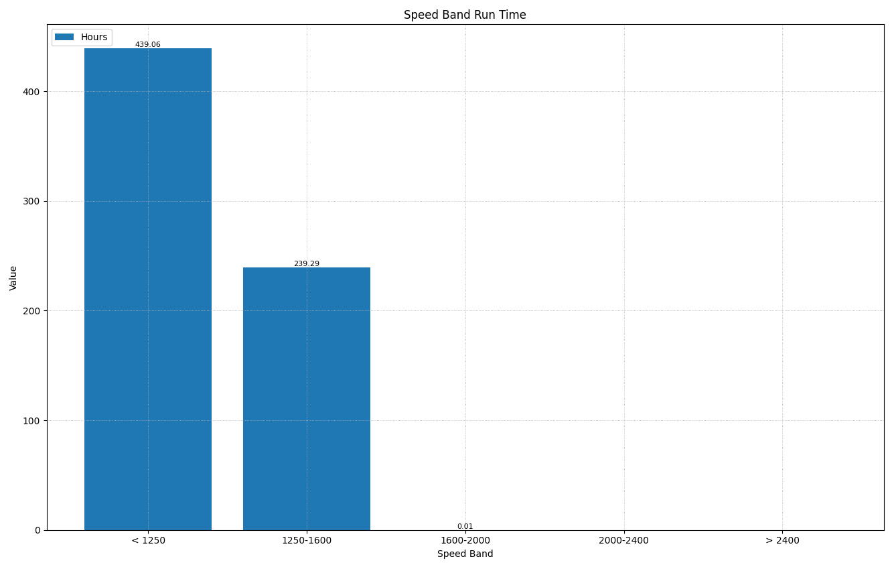

The Speed Band Run Time chart displays the distribution of engine operating hours across different RPM ranges, helping identify how the engine is typically used.
This bar chart shows accumulated run time for each speed band:
Engine speed directly affects exhaust gas temperature (EGT). Higher RPM operation generally produces higher EGTs, which is beneficial for diesel engine health and emissions systems.
| Benefit | Description |
|---|---|
| Complete Combustion | Higher temperatures ensure thorough burning of the fuel charge, maximizing power output and fuel efficiency. |
| DPF Regeneration | Diesel Particulate Filters require temperatures above 500°C (932°F) for passive regeneration. Higher EGTs allow continuous soot burn-off without active regeneration cycles. |
| SCR Efficiency | Selective Catalytic Reduction systems operate most efficiently at elevated temperatures, maximizing NOx conversion rates. |
| Reduced Carbon Deposits | Hot exhaust gases help burn off carbon buildup in the exhaust manifold, turbocharger, and EGR system. |
| Moisture Elimination | Higher temperatures vaporize condensation in the exhaust system, preventing corrosion and acid formation. |
| Issue | Description |
|---|---|
| DPF Clogging | Insufficient temperatures prevent passive regeneration, causing soot accumulation that triggers frequent active regenerations or eventual filter failure. |
| DEF Crystallization | Low EGTs can cause Diesel Exhaust Fluid to crystallize in the SCR injector and catalyst, reducing effectiveness and causing damage. |
| Wet Stacking | Unburned fuel and soot condense in the exhaust system, leading to black residue, increased emissions, and potential engine damage. |
| Turbocharger Coking | Oil residue bakes onto turbo bearings and seals when not reaching proper operating temperature, causing premature wear. |
| Sulfuric Acid Formation | When EGTs drop below the dew point, sulfur in the exhaust combines with moisture to form corrosive sulfuric acid. |
When reviewing this chart, consider: